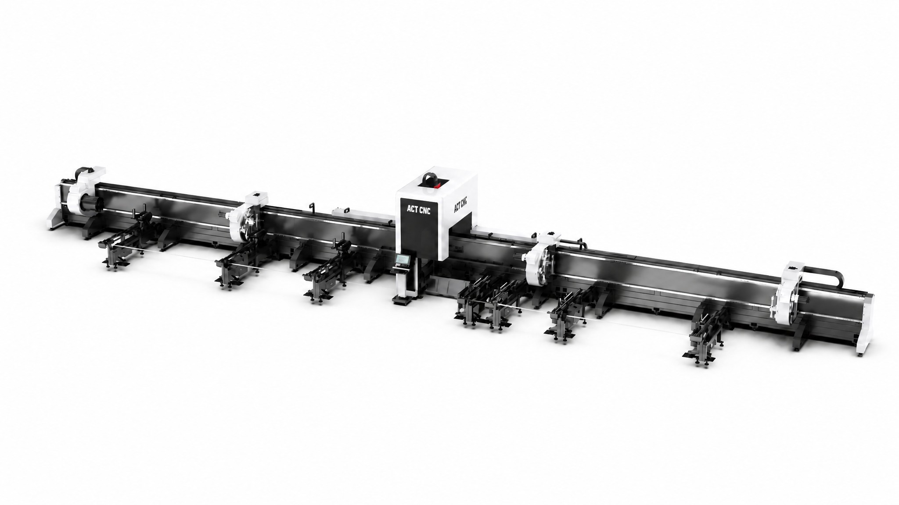

Engineered for oil & gas pipelines, steel bridge trusses, and construction machinery. Eliminates raw pipe tailing waste completely (0mm tailing loss) through full four-chuck synchronized clamping and dual-station pull-cutting, supporting ±45° 3D saddle curve beveling.

Factory parameters comparing standard, medium, and heavy Φ530mm 4-chuck machines.
| Specification Parameter | TL-230 (Standard) | TL-350 (Heavy 3-Chuck) | TL-530 (4-Chuck Flagship) |
|---|---|---|---|
| Round Pipe Clamping Range | Φ15 – 230 mm | Φ20 – 350 mm | Φ30 – 530 mm (Extra Heavy) |
| Square / Rectangular Tube Range | 15×15 – 230×230 mm | 20×20 – 350×350 mm | 30×30 – 500×500 mm |
| H-Beam / Channel Steel Support | Optional | Standard (100–300#) | Standard Heavy (up to 500#) |
| Chuck Configuration | Dual Pneumatic Chucks | Triple Side-Hanging Chucks | Quad (4) Synchronous Chucks |
| Tailing Scrap Length | ≤ 40 mm | ≤ 20 mm | True 0 mm (Zero Waste) |
| Max Raw Pipe Loading Weight | 800 kg per pipe | 2,000 kg per pipe | 5,000 kg per pipe |
| 3D Beveling Angle Range | ±45° (Optional) | ±45° Standard | ±45° High-Torque Bevel |
| Max Chuck Rotation Speed | 120 rpm | 90 rpm | 60 rpm (High Inertia) |
Four independent chucks shift dynamically during cutting, providing continuous support along the full length of heavy pipes and preventing sag-induced geometric errors.
The cutting head traverses between the middle chucks, enabling the final cut to be executed flush with the pipe end, saving thousands of dollars in high-value alloy pipe scrap annually.
Optional full-bundle automatic feeding system loads up to 5-ton pipe bundles automatically, sorting, measuring, and feeding raw pipes into chucks with zero manual intervention.